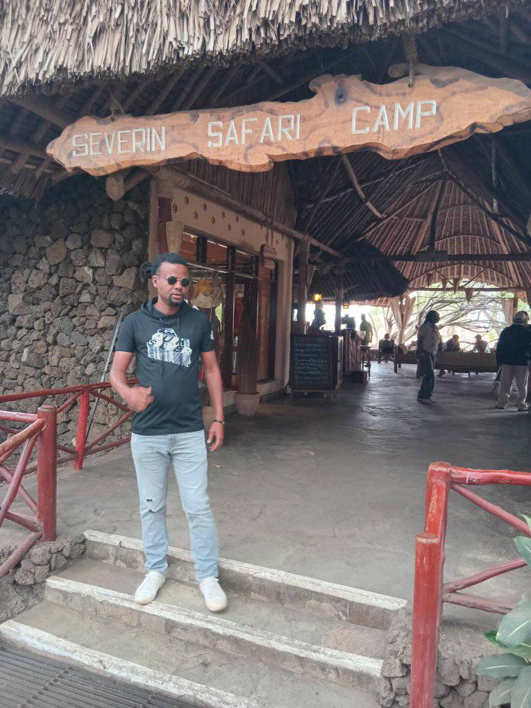

Your trusted safari guide in Kenya

Shakur is the founder of Safari Kenya Con Shakur and a passionate guide based in Watamu, Kenya. He specializes in organizing unforgettable safaris across Kenya’s national parks including Tsavo, Amboseli and Masai Mara.
With many years of experience guiding international travelers, Shakur focuses on creating authentic safari adventures while sharing his deep knowledge of wildlife, culture and nature.
Shakur is a passionate safari guide and tourism professional based in Kenya. With many years of experience guiding visitors across the country, he has built a reputation for offering authentic wildlife safaris and unforgettable travel experiences.
Through Safari Kenya Con Shakur, he helps travelers discover the beauty of Kenya — from the wildlife of the savannah to the stunning beaches of the Indian Ocean. His goal is to provide safe, memorable and personalized safari adventures.
Explore Kenya's famous national parks and see lions, elephants, giraffes and the Big Five.
Enjoy relaxing trips along the beautiful Kenya coast including Watamu and Malindi.
Discover local communities, traditions and authentic Swahili culture.